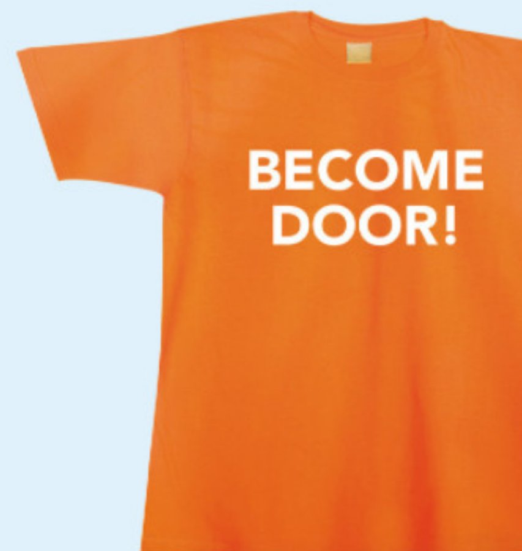

<!doctype html>
<html lang="en">
<head><meta name="robots" content="noindex,nofollow">
<meta charset="utf-8"><script>/* open-from-main-screen */(function(){try{if(window.top!==window)return;var r=document.referrer;if(r&&new URL(r).origin===location.origin)return}catch(e){return}location.replace("index.html")})();</script>
<meta name="viewport" content="width=device-width,initial-scale=1,viewport-fit=cover">
<meta http-equiv="Cache-Control" content="no-cache">
<title>Gabi · Module 3 · Lesson 2 · The language that never sleeps</title>
<link rel="preconnect" href="https://fonts.googleapis.com">
<link rel="stylesheet" href="https://fonts.googleapis.com/css2?family=Montserrat:wght@600;700;800&family=Figtree:wght@400;500;600;700;800&display=swap">
<link rel="stylesheet" href="skills.css?v=20261015big">
<link rel="stylesheet" href="case.css?v=20261015big">
<style>
/* Speed Game: round timer instead of a bomb (same as Module 2, lesson 4) */
.bombsvg path,.bombsvg rect,.bombsvg .spark,.bombsvg circle:nth-of-type(2){display:none}
.bombsvg circle:nth-of-type(1){fill:#169be5}
.bomb-box.hot .bombsvg circle:nth-of-type(1){fill:#e2574c}
ol.hunt{padding-left:2.1em}
.sheet:not(.two) .scols:has(> :nth-child(4)){grid-template-columns:repeat(4,minmax(0,1fr))}
.act.panel .opts{flex:0 0 auto;grid-auto-rows:auto;align-content:start;gap:8px}
.act.panel .opts button{min-height:52px;padding:8px 12px;font-size:19px}
.act.panel .opts.c3 button{font-size:18px}
.act.panel .opts{flex:0 0 auto;grid-auto-rows:auto;align-content:start;gap:8px}
.act.panel .opts button{min-height:52px;padding:8px 12px;font-size:19px}
.act.panel .opts.c3 button{font-size:18px}
/* grammar help hidden under a button */
.work{position:relative}
.helpbtn{position:absolute;right:14px;top:10px;z-index:20}
.helpbtn>summary{list-style:none;cursor:pointer;background:#ffd23f;color:#1b2333;font:800 16px/1 Figtree,sans-serif;padding:10px 16px;border-radius:12px;border:2px solid #e0b400;user-select:none}
.helpbtn>summary::-webkit-details-marker{display:none}
.helpbtn[open]>summary{background:#fff;border-color:#ffd23f}
.helppop{position:absolute;right:0;top:46px;width:min(520px,86vw);max-height:min(430px,70vh);overflow:auto;background:#121826;color:#e8edf6;border:2px solid #ffd23f;border-radius:14px;padding:12px 14px;box-shadow:0 14px 34px rgba(0,0,0,.4)}
.helppop .court{display:flex;align-items:center;gap:12px;margin:0 0 8px}
.helppop .court h4{margin:0;font:800 22px/1.1 Montserrat,sans-serif;color:#fff}
.helppop .stamp{flex:none;border:2px solid #ffd23f;color:#ffd23f;font:800 11px/1 Montserrat,sans-serif;letter-spacing:.14em;padding:5px 7px;border-radius:5px;transform:rotate(-3deg)}
.helppop .say{margin:0;padding:0;list-style:none;display:grid;gap:5px}.helppop .say li{background:rgba(255,255,255,.08);border-radius:9px;padding:6px 10px;font-size:16.5px}.helppop .say b{color:#ffd23f}
.helppop .words{margin:9px 0 0;font-size:15px;color:#aebbd0;line-height:1.4}.helppop .words b{color:#ffd23f}
.work:has(.helpbtn) .hint{padding-right:150px}

.helppop table{border-collapse:collapse;width:100%;margin-top:6px;font-size:15.5px}.helppop td,.helppop th{border:1px solid rgba(255,255,255,.22);padding:4px 8px;text-align:left}.helppop th{color:#ffd23f}
/* prediction: the greetings appear one by one */
.tagsbox{flex:1;min-height:0;display:flex;flex-direction:column;align-items:center;justify-content:center;gap:14px;text-align:center}
.tagsbox .q{margin:0}
.tagsrow{display:flex;flex-wrap:wrap;gap:10px;justify-content:center}
.tagsrow span{font:800 clamp(19px,2vw,26px)/1 Figtree,sans-serif;color:#fff;padding:9px 16px;border-radius:9px;background:#169be5;transform:rotate(-2deg)}
.tagsrow span:nth-child(4n+2){background:#0f9d8a;transform:rotate(1.5deg)}.tagsrow span:nth-child(4n+3){background:#e2459b}.tagsrow span:nth-child(4n+4){background:#7a5bd0;transform:rotate(2deg)}
/* picture / video panel */
.media{flex:1;min-height:0;display:flex;flex-direction:column;gap:8px}
.media .frame{flex:1;min-height:0;display:grid;place-items:center;background:#0d1526;border-radius:12px;overflow:hidden}
.media .frame img,.media .frame video{max-width:100%;max-height:100%;width:auto;height:100%;object-fit:contain;display:block}
.media .row{flex:none;flex-wrap:wrap}.media .row .on{background:#ffd23f;border-color:#e0b400}
/* airport departures board */
.air{flex:1;min-height:0;display:flex;flex-direction:column;gap:10px;justify-content:center}
.air .brd{background:#0d1b33;border-radius:14px;padding:10px 16px;color:#fff;font:700 clamp(17px,1.6vw,22px)/1.2 Figtree,sans-serif}
.air .brd h5{margin:0 0 6px;font:800 13px Montserrat,sans-serif;letter-spacing:.14em;color:#8fd0ff}
.air .brd div{display:grid;grid-template-columns:1fr 1.2fr .6fr;gap:8px;padding:7px 0;border-bottom:1px solid #2c4263}.air .brd div:last-child{border:0}
.air .brd div:first-of-type{color:#ffd23f;font-size:.8em;letter-spacing:.08em}
.air .lost{display:grid;grid-template-columns:1fr 1fr;gap:10px}
.air .lost span{background:#eef4fb;border:2px solid #c5d3e6;border-radius:12px;padding:8px 12px;font:800 clamp(17px,1.6vw,21px) Figtree,sans-serif;color:#10233f}
.air .lost small{display:block;font:700 12px Montserrat,sans-serif;letter-spacing:.1em;color:#566b84}
/* three messages, each open for 30 seconds */
.msg{flex:1;min-height:0;display:flex;flex-direction:column;gap:8px}
.msg .pick{display:grid;grid-template-columns:repeat(3,1fr);gap:8px;flex:none}
.msg .pick button{border:2px solid #c5d3e6;border-radius:12px;background:#fff;padding:6px 10px;text-align:left;font:inherit;cursor:pointer}
.msg .pick b{display:block;font-size:18px;color:#10233f}.msg .pick small{font-size:13.5px;color:#566b84;font-weight:600}
.msg .pick .on{border-color:#ffd23f;background:#fff6cf}
.msg .page{flex:1;min-height:0;overflow:auto;border-radius:12px;padding:10px 14px;background:#f3f7fc;border:2px dashed #c5d3e6;font-size:clamp(16px,1.45vw,20px);line-height:1.5;color:#10233f}
.msg .page.idle{display:grid;place-items:center;text-align:center;font-weight:700;color:#3a5070}
.msg .row{flex:none}.msg .clock{font:800 26px Montserrat,sans-serif;color:#169be5;font-variant-numeric:tabular-nums;margin-left:auto}.msg .clock.hot{color:#e2574c}
@media(max-height:640px){.act.panel .tcard{padding:6px 12px}.act.panel .tcard .q{font-size:18px}.act.panel .tcard .sub{font-size:14px}.act.panel .chips{gap:4px}.act.panel .chips button{font-size:13.5px;padding:2px 9px}.act.panel .order.compact button{font-size:13.5px;padding:0 8px;min-height:0;line-height:1.15}.act.panel .order.compact>div{gap:2px}.act.panel .opts.c1 button{min-height:38px;padding:3px 10px;font-size:16px}.act.panel .opts.c1{gap:5px}.act.panel .q{font-size:19px}.act.panel .order.compact .lab{font-size:13px}.msg .page{font-size:14.5px;line-height:1.38;padding:6px 10px}.msg .pick b{font-size:15px}.msg .pick button{padding:3px 8px}.air .brd{font-size:15px;padding:6px 12px}.air .brd div{padding:4px 0}}
/* twelve pairs fit without scrolling */
.act.panel .match button{font-size:16.5px;padding:4px 10px;min-height:0;line-height:1.25}.act.panel .match>div{gap:5px}
.act.panel .hunt{font-size:18.5px;gap:1px}.act.panel .hunt li{line-height:1.5}.act.panel .hunt em{font-size:.9em}
@media(max-height:640px){.act.panel .match button{font-size:15px;padding:1px 9px;line-height:1.15}.act.panel .match>div{gap:2px}.act.panel .hunt{font-size:16.5px;gap:0}.act.panel .hunt li{line-height:1.32}.act.panel .hunt button{padding-top:0;padding-bottom:0}.act.panel .sortpool{gap:4px;padding:4px}.act.panel .sortpool button,.act.panel .scol button{font-size:14px;padding:1px 8px;min-height:0}.act.panel .row .main,.act.panel .row .ghost{padding-top:5px;padding-bottom:5px}.act.panel .cloze{font-size:15.5px;line-height:1.6}.act.panel .cloze select{font-size:15px;padding:1px 4px}.act.panel .scol{min-height:44px}.tagsrow span{font-size:17px;padding:6px 11px}}

/* ---------- Lesson 2: the article, photo reveal, culture exchange ---------- */
.reveal{flex:1;min-height:0;display:flex;flex-direction:column;gap:8px}
.reveal .frame{position:relative;flex:1;min-height:0;border-radius:12px;overflow:hidden;background:#0d1526}
.reveal .frame img{position:absolute;inset:0;width:100%;height:100%;object-fit:contain}
.reveal .tiles{position:absolute;inset:0;display:grid;grid-template-columns:repeat(3,1fr);grid-template-rows:repeat(2,1fr);gap:3px}
.reveal .tiles button{border:0;border-radius:6px;background:#1e3a66;color:#8fd0ff;font:800 clamp(22px,2.4vw,34px) Montserrat,sans-serif;cursor:pointer}
.reveal .tiles button:nth-child(2n){background:#24467a}
.reveal .tiles button.off{visibility:hidden}
.reveal .row{flex:none;flex-wrap:wrap}.reveal .row .on{background:#ffd23f;border-color:#e0b400}
.titlecard{position:absolute;inset:0;display:grid;place-items:center;background:#3bbfd6;text-align:center;padding:20px}
.titlecard b{display:block;font:800 clamp(44px,6vw,86px)/1 Montserrat,sans-serif;color:#fff;letter-spacing:.02em}
.titlecard span{display:block;margin-top:10px;font:800 clamp(18px,2vw,28px)/1.1 Montserrat,sans-serif;color:#0b3550}
.art{flex:1;min-height:0;display:flex;flex-direction:column;gap:8px}
.art .page{flex:1;min-height:0;overflow:auto;border-radius:12px;padding:10px 16px;background:#fff;border:3px solid #3bbfd6;color:#10233f;font:500 clamp(15.5px,1.32vw,19px)/1.5 Figtree,sans-serif}
.art .page h5{margin:0 0 4px;font:800 clamp(22px,2vw,30px)/1 Montserrat,sans-serif;color:#0b3550}
.art .page h5 small{display:block;font-size:.5em;letter-spacing:.06em;color:#169be5;margin-top:3px}
.art .page p{margin:0 0 6px}
.art .page .gap{color:#0f9d8a;font-weight:800}
.art .page .fill{background:#fff6cf;border-radius:5px;padding:0 3px;font-weight:700}
.art .page .note{display:grid;grid-template-columns:1fr 1fr;gap:8px;font-size:.86em;color:#33465f}
.art .page .note div{background:#e8f7fa;border-radius:8px;padding:4px 8px}.art .page .note b{color:#169be5}
.art .page.idle{display:grid;place-items:center;text-align:center;background:#e8f7fa;border-style:dashed}
.art .page.idle b{display:block;font:800 clamp(20px,2vw,28px) Montserrat,sans-serif;color:#0b3550;margin-bottom:6px}
.art .row{flex:none;flex-wrap:wrap}.art .row .on{background:#ffd23f;border-color:#e0b400}
.art .eq{display:inline-flex;gap:3px;align-items:flex-end;height:18px;margin-left:6px;vertical-align:middle}
.art .eq i{width:4px;background:#169be5;border-radius:2px;animation:eq 1s ease-in-out infinite}.art .eq i:nth-child(2){animation-delay:.2s}.art .eq i:nth-child(3){animation-delay:.4s}
@keyframes eq{0%,100%{height:4px}50%{height:18px}}
@media(max-height:640px){#act-1 p.q{font-size:20px}.act.panel .hunt em{font-size:.85em}.act.panel .cloze{font-size:14.5px;line-height:1.5}.act.panel .cloze select{font-size:14px;padding:0 3px}.art .page{font-size:14.5px;line-height:1.38;padding:6px 12px}.art .page h5{font-size:20px}.titlecard b{font-size:42px}}
</style>
</head>
<body>
<script src="../card-audio.js?v=20261118a"></script>
<script src="skills.js?v=20261104a"></script>
<script>
/* Module 3 (Plurilingual), lesson 2 · Gateway B1, SB p.33 Reading «English: the language that never sleeps» + p.34 Grammar in context 1
   (countable and uncountable nouns; some, any, much, many, a lot of, a few, a little) + Culture exchange «International English» + p.35 ex 8-11 (a few / few).
   Same engine and look as lesson 1. Two activities per screen:
   1 homework check (error hunter + Speed Game) -> 2 warm-up questions + prediction from parts of the photos
   -> 3 the article: listen first, text hidden + questions from memory -> 4 the text with gaps a-g + the missing sentences
   -> 5 words from the text (flashcards) + blends and acronyms -> 6 countable / uncountable (sort + ex 2)
   -> 7 quantifiers (sort + floor is lava) -> 8 a few / few, a little / little -> 9 Culture exchange: International English
   -> 10 Guess the country (ex 10-11) + Jeopardy -> 11 Critical thinkers + Speed Game.
   Audio: natural recordings in ../card-audio (AUDIO_TEXTS is collected by tools/card-audio-collect.mjs). */
const ARTICLE=[
 "Some countries, like Spain, Italy and France, have language academies which watch over the official development of their language. But there aren't any official organisations doing the same with English. [a]",
 "New words and expressions appear in English almost every week. [b] They're the result of two words coming together, or 'blending', to make a new word. So, the words 'snack' and 'accident' produce the word 'snaccident'. An example of a 'snaccident' is when you plan to eat just one chocolate and you eat the whole box by accident. 'Snaccidents' can happen when we become 'hangry'. That's when we're angry because we're hungry. This can often happen to 'screenagers'. [c]",
 "Social media is responsible for new language. When you see photos and posts of your friends doing exciting things or travelling around the world, it can cause FOMO. [d] People who often travel are the POTUS and FLOTUS. They're the President and First Lady of the United States. FOMO, POTUS and FLOTUS are examples of new acronyms. [e]",
 "With just a little imagination, people are inventing hundreds of new words every day. Are there any real problems with this? [f] That's because the world changes, too. Maybe technology is making things change very quickly now. [g] This innovation of language has been happening for a long time, even since Shakespeare. So, for those people who are unhappy because they think all these new words are incorrect, just have some 'froyo' and 'chillax'!"];
const SENT=["That's the fear of missing out, feeling anxious because you think other people are having a good time without you.","A lot of them are blends.","But there were many changes in England in the 16th century, too.","All languages change and evolve.","There are few examples, apart from blends and acronyms.","These are young people who spend a lot of time in front of a screen.","Is that why English continues to change so quickly?","These words are made with the first letters of a phrase or expression and are popular on social media."];
const KEY={a:6,b:1,c:5,d:0,e:7,f:3,g:2};
const FULL=ARTICLE.map(p=>p.replace(/\[([a-g])\]/g,(m,g)=>SENT[KEY[g]]));
const SPOKEN=FULL.flatMap(p=>p.match(/[^.!?]+[.!?]+['’]?/g).map(x=>x.trim()));
const WARM=['How many new English words do you learn in a week?','Where do you see new English words: on social media, in games or in films?','Which English abbreviations do you use when you send messages?','Do you think English changes faster than Russian? Why?'];
const IV3=['Do you ever feel you are missing out when you look at your friends’ posts?','Have you ever had a snaccident? What happened?','Do you get hangry? What do you do then?','Are you a screenager? How much time do you spend in front of a screen?'];
const WORDS=[
 ['development','noun','развитие','the official development of their language'],
 ['blend','noun / verb','смесь; смешивать','snack + accident = snaccident: a blend'],
 ['post','noun','пост, публикация','photos and posts of your friends'],
 ['First Lady','noun','первая леди','the President and First Lady of the United States'],
 ['evolve','verb','развиваться, эволюционировать','All languages change and evolve.'],
 ['miss out','phrasal verb','упустить, пропустить что-то интересное','the fear of missing out'],
 ['acronym','noun','аббревиатура, читаемая как слово','FOMO, POTUS and FLOTUS are acronyms.'],
 ['invent','verb','придумывать, изобретать','people are inventing hundreds of new words'],
 ['innovation','noun','новшество, нововведение','This innovation of language has been happening for a long time.'],
 ['responsible for','adjective','являющийся причиной, ответственный за','Social media is responsible for new language.'],
 ['anxious','adjective','тревожный, беспокоящийся','feeling anxious because you think other people are having a good time'],
 ['imagination','noun','воображение','With just a little imagination, people are inventing new words.']];
const NEWW=[['snaccident','snack + accident: you eat much more than you planned'],['hangry','hungry + angry: angry because you are hungry'],['screenager','screen + teenager: a young person who spends a lot of time in front of a screen'],['froyo','frozen + yoghurt: a frozen dessert made from yoghurt'],['chillax','chill out + relax: to be relaxed and calm'],['FOMO','the Fear Of Missing Out'],['POTUS','the President Of The United States'],['FLOTUS','the First Lady Of The United States']];
const AUDIO_TEXTS=SPOKEN.concat(WARM,IV3,WORDS.map(w=>w[0]),WORDS.map(w=>w[3]),NEWW.map(w=>w[0]));
const clip=t=>CardAudio.base+CardAudio.key(t)+'.mp3?v=20261118a';
const COURT=(t,s)=>`<div class="court"><h4>${t}</h4><span class="stamp">${s||'RULE'}</span></div>`;
const RULE_CU=COURT('Countable and uncountable nouns')+`<ul class="say">
<li><b>Countable</b> nouns have a singular and a plural: a word – two words, an example – lots of examples.</li>
<li><b>Uncountable</b> nouns have no plural and no a / an: imagination, information, advice, knowledge, water, snow, luggage. The verb is singular: <b>There is</b> some juice.</li>
<li><b>Both</b>: the meaning changes. <b>time</b> (U, время) – six <b>times</b> (C, раз) · <b>chocolate</b> (U, шоколад) – <b>a chocolate</b> (C, конфета) · <b>language</b> (U, язык вообще) – <b>a language</b> (C, конкретный язык).</li></ul>
<p class="words"><b>Watch out:</b> advice, information, news, homework, luggage are <b>uncountable</b> in English: <b>a piece of</b> advice, <b>some</b> information, the news <b>is</b> good.</p>`;
const RULE_Q=COURT('Quantifiers')+`<table><tr><th></th><th>countable (plural)</th><th>uncountable</th></tr>
<tr><td>+</td><td>some, a lot of, lots of, a few, many*</td><td>some, a lot of, lots of, a little</td></tr>
<tr><td>– / ?</td><td>any, many, a lot of</td><td>any, much, a lot of</td></tr></table>
<ul class="say" style="margin-top:8px"><li><b>some</b> in positive sentences and in offers: Would you like <b>some</b> froyo?</li>
<li><b>any</b> in negatives and questions: Are there <b>any</b> problems? They haven’t got <b>any</b> imagination.</li>
<li><b>much / many</b> mostly in negatives and questions; in positive sentences we usually say <b>a lot of</b>.</li></ul>
<p class="words"><b>Watch out:</b> <b>a few / a little</b> = some, enough (positive). <b>few / little</b> = not enough, almost none (negative): There are <b>few</b> examples. They have <b>little</b> imagination.</p>`;
/* flashcards: a Listen button with the recorded British voice */
(function(){const C=Lesson.ACT.cards,v=C.view;C.view=(a,s)=>v(a,s).replace('<div class="row nav3">',`<div class="row nav3"><button class="ghost" data-listen="${Lesson.esc(a.items[s.i].w)}">Listen</button>`);
 document.addEventListener('click',e=>{const b=e.target.closest('[data-listen]');if(b){e.stopPropagation();CardAudio.say(b.dataset.listen)}},true)})();
/* prediction from parts of the photos: six tiles cover each photo, open them one by one */
Lesson.ACT.reveal={
 init(a,s){s.k=0;s.off=a.items.map(()=>[])},
 view(a,s){const m=a.items[s.k],off=s.off[s.k];
  const pic=m.title?`<div class="titlecard"><div><b>${Lesson.esc(m.title)}</b><span>${Lesson.esc(m.sub||'')}</span></div></div>`:``;
  return `<div class="reveal"><div class="frame">${pic}<div class="tiles">${[1,2,3,4,5,6].map(n=>`<button data-tile="${n}" class="${off.includes(n)?'off':''}">${n}</button>`).join('')}</div></div>
   <div class="row">${a.items.map((x,k)=>`<button class="ghost${k===s.k?' on':''}" data-rk="${k}">${Lesson.esc(x.label)}</button>`).join('')}<button class="main" data-rall>Show all</button></div></div>`},
 click(a,s,d){if(d.rk!==undefined){s.k=+d.rk;return Lesson.redraw()}
  if(d.tile!==undefined){const o=s.off[s.k],n=+d.tile;if(!o.includes(n))o.push(n);return Lesson.redraw()}
  if(d.rall!==undefined){s.off[s.k]=[1,2,3,4,5,6];return Lesson.redraw()}}};
Lesson.ACT.read={view(a){return a.html}};
/* the article: listen first (the text is hidden), then read; gaps a-g, the answers can be shown */
let ART_ON=false;
const artHTML=fill=>`<h5>ENGLISH<small>THE LANGUAGE THAT NEVER SLEEPS</small></h5>`+ARTICLE.map(p=>`<p>${Lesson.esc(p).replace(/\[([a-g])\]/g,(m,g)=>fill?`<span class="gap">(${g})</span> <span class="fill">${Lesson.esc(SENT[KEY[g]])}</span>`:`<span class="gap">(${g}) ……</span>`)}</p>`).join('')+
 `<div class="note"><div><b>*froyo</b> (noun): frozen yoghurt = frozen dessert made from yoghurt, often served with fruit</div><div><b>**chillax</b> (verb): a combination of chill out + relax = to be relaxed and calm</div></div>`;
/* leaving the screen stops the article */
document.addEventListener('click',e=>{if(e.target.closest('#steps,#prev,#next,.home')&&ART_ON){ART_ON=false;CardAudio.stop()}},true);
Lesson.ACT.article={
 init(a,s){s.shown=!!a.open;s.fill=false},
 view(a,s){const play=`<button class="main" data-aplay>${ART_ON?'Stop':(a.open?'Listen and check':'Listen')}</button>${ART_ON?'<span class="eq"><i></i><i></i><i></i></span>':''}`;
  if(!s.shown)return `<div class="art"><div class="page idle"><div><b>Listen first.</b>The text is hidden.</div></div><div class="row">${play}<button class="ghost" data-ashow>Show the text</button></div></div>`;
  return `<div class="art"><div class="page">${artHTML(s.fill)}</div><div class="row">${play}<button class="ghost${s.fill?' on':''}" data-afill>${s.fill?'Hide the answers':'Show the answers'}</button>${a.open?'':'<button class="ghost" data-ahide>Hide the text</button>'}</div></div>`},
 click(a,s,d){
  if(d.aplay!==undefined){if(ART_ON){ART_ON=false;CardAudio.stop();return Lesson.redraw()}ART_ON=true;if(a.open)s.fill=true;Lesson.redraw();CardAudio.sayList(SPOKEN,null,()=>{ART_ON=false;Lesson.redraw()});return}
  if(d.ashow!==undefined){s.shown=true;return Lesson.redraw()}
  if(d.ahide!==undefined){s.shown=false;return Lesson.redraw()}
  if(d.afill!==undefined){s.fill=!s.fill;return Lesson.redraw()}}};
const CE=[
 {pre:'How',opts:['much','many'],ans:['many']},
 {pre:'English words can you see every day when you go to school in the morning? The answer is probably',opts:['a lot','a lot of'],ans:['a lot']},
 {pre:'. You can usually see',opts:['much','many'],ans:['many']},
 {pre:'English names, words or expressions on T-shirts or other clothes. When you look closely,',opts:['some','any'],ans:['some']},
 {pre:'of these expressions are not correct or don’t make',opts:['any','some'],ans:['any']},
 {pre:'sense! Apart from clothes, you may see',opts:['a few','a little'],ans:['a few']},
 {pre:'adverts and posters in shops and in the streets that are in English. It seems that',opts:['much','a lot of'],ans:['a lot of']},
 {pre:'companies use English to sell their products. Is there',opts:['any','a few'],ans:['any']},
 {pre:'need for this?',opts:['Many','Much'],ans:['Many']},
 {pre:'experts (including members of the Spanish Academy of Advertising) think that companies choose English because it sounds modern and dynamic. It’s interesting that',opts:['lots of','lots'],ans:['lots of']},
 {pre:'expensive products have adverts and slogans in English but only',opts:['a few','a little'],ans:['a few']},
 {pre:'cheap products do. When you go to school tomorrow, if you leave early and have',opts:['a little','few'],ans:['a little']},
 {pre:'time, look around and make a note of all the English words you see. But check with your teacher to see how',opts:['much','many'],ans:['many']}];
const STEPS=[
{stage:'Check-in',title:'Your homework: countries and languages',hint:'These sentences are like the ones in your homework. Find the mistake in each one. <small>Then the Speed Game: 15 seconds for each question.</small>',cols:'1.1fr 1fr',
 acts:[
 {type:'hunt',title:'Error hunter · your homework',tip:'Click the word with the mistake.',items:[
  {s:'My cousin from Madrid speaks perfect spanish.',bad:6,fix:'Spanish',why:'capital letter'},
  {s:'Paulo is from Brazil, so his native language is Brazilian.',bad:9,fix:'Portuguese',why:'language of Brazil'},
  {s:'In Egypt most people speak Egyptian.',bad:5,fix:'Arabic',why:'language of Egypt'},
  {s:'Our new neighbours are from Poland. They are Poland.',bad:8,fix:'Polish'},
  {s:'People in Austria speak Austrian.',bad:4,fix:'German'},
  {s:'He is from Istanbul, so he is Turkey.',bad:7,fix:'Turkish'},
  {s:'You need to practice every day if you want to speak well.',bad:3,fix:'practise',why:'verb'},
  {s:'I always do a lot of mistakes in my essays.',bad:2,fix:'make'},
  {s:'Regular revise helps you to remember new words.',bad:1,fix:'revision',why:'noun'},
  {s:'Your answer is accuracy. There are no mistakes.',bad:3,fix:'accurate',why:'adjective'}]},
 {type:'bomb',speed:true,secs:15,label:'Homework check',title:'Speed Game · Module 3 words',items:[
  {sec:'Countries',q:'Swiss chocolate is from ___.',o:['Sweden','Switzerland','Swissland'],a:'Switzerland'},
  {sec:'Countries',q:'Pad thai is a famous dish from ___.',o:['Thai','Taiwan','Thailand'],a:'Thailand'},
  {sec:'Countries',q:'A person from Sofia is ___.',o:['Bulgarian','Bulgarish','Sofian'],a:'Bulgarian'},
  {sec:'Learning',q:'My sister speaks French very well. She is ___.',o:['fluency','fluent','native'],a:'fluent'},
  {sec:'Learning',q:'In speaking exams, ___ is as important as accuracy.',o:['fluent','fluency','translation'],a:'fluency'},
  {sec:'Learning',q:'It is hard to ___ twenty new words in one evening.',o:['memorise','memorisation','revision'],a:'memorise'},
  {sec:'Learning',q:'Can you ___ this message into English?',o:['translation','get by','translate'],a:'translate'},
  {sec:'Airport Mystery',q:'I can ___ in French, but I can’t discuss difficult topics.',o:['get by','look up','come across'],a:'get by'},
  {sec:'Airport Mystery',q:'He ___ Spanish while he was travelling.',o:['picked up','looked up','got by'],a:'picked up'},
  {sec:'Airport Mystery',q:'A translation app can help with a language ___.',o:['border','barrier','mistake'],a:'barrier'}]}]},
{stage:'Warm-up',title:'New words every week',hint:'Listen to the question and answer. <small>Then the photos: open the tiles one by one. What can you see? What is the connection?</small>',cols:'1fr 1.2fr',
 acts:[
 {type:'talk',title:'Ask and answer',label:'Question',secs:40,cards:WARM.map(q=>({q,say:q,audio:clip(q)}))},
 {type:'reveal',title:'Predict · what is the text about?',items:[{label:'Photo 1',img:'assets/u3l2/fomo.jpg'},{label:'Photo 2',img:'assets/u3l2/snaccident.jpg'},{label:'The title',title:'ENGLISH',sub:'THE LANGUAGE THAT NEVER SLEEPS'}]}]},
{stage:'Reading',title:'English: the language that never sleeps',hint:'Listen to the article. The text is hidden. <small>Then answer from memory. Were your ideas about the photos correct?</small>',cols:'1.15fr 1fr',
 acts:[
 {type:'article',title:'The article · listen first'},
 {type:'quiz',title:'What do you remember?',label:'Question',cols:1,shuffle:false,items:[
  {q:'Which countries have language academies?',o:['Spain, Italy and France','England and the United States','Russia, Japan and Brazil'],a:'Spain, Italy and France'},
  {q:'Is there an official organisation for English?',o:['Yes, in London','No, there isn’t','Yes, in the United States'],a:'No, there isn’t'},
  {q:'How often do new words appear in English?',o:['Almost every year','Almost every week','Only on social media'],a:'Almost every week'},
  {q:'A snaccident is when you …',o:['drop your snack by accident','eat much more than you planned','have an accident in a café'],a:'eat much more than you planned'},
  {q:'You are hangry when you are …',o:['hungry and angry','tired and hungry','happy and angry'],a:'hungry and angry'},
  {q:'What can cause FOMO?',o:['Photos and posts of friends having fun','Long English lessons','Too many snacks'],a:'Photos and posts of friends having fun'},
  {q:'Who are POTUS and FLOTUS?',o:['Two famous bloggers','The President and First Lady of the United States','Two new apps'],a:'The President and First Lady of the United States'},
  {q:'How many new words are people inventing?',o:['A few every year','Hundreds every day','None: all words are old'],a:'Hundreds every day'},
  {q:'Since when has language innovation been happening?',o:['Since Shakespeare','Since the Internet','Since 2010'],a:'Since Shakespeare'},
  {q:'Is the writer worried about the changes in English?',o:['Yes, very worried','No, the writer thinks it is natural','The writer doesn’t say'],a:'No, the writer thinks it is natural',why:'“just have some froyo and chillax!”'}]}]},
{stage:'Reading',title:'The missing sentences',hint:'Read the text. Which sentence goes in each gap (a–g)? There is one extra sentence. <small>Then listen and check.</small>',cols:'1.15fr 1fr',
 acts:[
 {type:'article',open:true,title:'The text · gaps a–g'},
 {type:'quiz',title:'Which sentence goes in the gap?',label:'Gap',cols:1,shuffle:false,items:[
  {q:'(a) … doing the same with English. ___',o:[SENT[2],SENT[6],SENT[4]],a:SENT[6]},
  {q:'(b) New words appear almost every week. ___ They’re the result of two words coming together.',o:[SENT[7],SENT[1],SENT[4]],a:SENT[1]},
  {q:'(c) This can often happen to ‘screenagers’. ___',o:[SENT[0],SENT[3],SENT[5]],a:SENT[5]},
  {q:'(d) … it can cause FOMO. ___',o:[SENT[7],SENT[6],SENT[0]],a:SENT[0]},
  {q:'(e) … examples of new acronyms. ___',o:[SENT[1],SENT[7],SENT[4]],a:SENT[7]},
  {q:'(f) Are there any real problems with this? ___ That’s because the world changes, too.',o:[SENT[2],SENT[3],SENT[6]],a:SENT[3]},
  {q:'(g) … change very quickly now. ___ This innovation of language has been happening for a long time.',o:[SENT[4],SENT[2],SENT[5]],a:SENT[2]},
  {q:'Which sentence is extra?',o:[SENT[3],SENT[1],SENT[4]],a:SENT[4],why:'The text has lots of examples.'}]}]},
{stage:'Words',title:'Words from the text',hint:'Guess the meaning first, then turn the card over. <small>Then the new words: blend or acronym? Match each word with its meaning.</small>',cols:'1fr 1.25fr',
 acts:[
 {type:'cards',title:'Flashcards · 12 words',items:WORDS.map(c=>({w:c[0],ru:c[2],d:c[1],ex:c[3]}))},
 {type:'match',title:'New words · match the meaning',tip:'Tap a word, then its meaning.',items:NEWW.map(w=>({l:w[0],r:w[1]}))}]},
{stage:'Grammar',title:'Countable or uncountable?',hint:'Can we count it? Some words can be both: the meaning changes. <small>Then choose the correct form of the nouns.</small>',cols:'1.15fr 1fr',help:{label:'Rule',html:RULE_CU},
 acts:[
 {type:'sort',title:'Sort the nouns',cols:['countable','uncountable','both'],items:[{t:'example',c:0},{t:'word',c:0},{t:'acronym',c:0},{t:'country',c:0},{t:'post',c:0},{t:'imagination',c:1},{t:'information',c:1},{t:'advice',c:1},{t:'knowledge',c:1},{t:'luggage',c:1},{t:'water',c:1},{t:'language',c:2},{t:'time',c:2},{t:'chocolate',c:2}]},
 {type:'quiz',title:'Exercise 2 · the correct form',label:'Sentence',cols:3,shuffle:false,items:[
  {q:'I’m very busy. I haven’t got ___ to find the words in a dictionary.',o:['a time','time','times'],a:'time'},
  {q:'You need ___ to think of a creative story.',o:['an imagination','imaginations','imagination'],a:'imagination'},
  {q:'Portuguese is the official ___ of Brazil, but there are around 230 in the country!',o:['language','languages','a language'],a:'language'},
  {q:'Would you like ___? You can find the last one in the fridge.',o:['chocolate','a chocolate','chocolates'],a:'a chocolate',why:'the last one: we can count it'},
  {q:'FOMO is ___ of an acronym. POTUS is another.',o:['example','an example','examples'],a:'an example'},
  {q:'I called him six ___, but he never answered.',o:['time','a time','times'],a:'times',why:'times = раз'},
  {q:'Can you give me some ___ about learning English?',o:['advices','advice','an advice'],a:'advice',why:'advice is uncountable'},
  {q:'There ___ a lot of new information on the website.',o:['is','are','were'],a:'is',why:'information is uncountable'},
  {q:'My suitcase is heavy. I’ve got too much ___.',o:['luggages','a luggage','luggage'],a:'luggage'},
  {q:'Russian, Spanish and Arabic are difficult ___ to learn.',o:['language','languages','a language'],a:'languages'}]}]},
{stage:'Grammar',title:'some, any, much, many, a lot of, a few, a little',hint:'Which words go with countable nouns, which with uncountable nouns? <small>Then the floor is lava: three wrong answers and you lose.</small>',cols:'1fr 1.15fr',help:{label:'Rule',html:RULE_Q},
 acts:[
 {type:'sort',title:'Sort the quantifiers',cols:['plural countable','uncountable','both'],items:[{t:'many',c:0},{t:'a few',c:0},{t:'much',c:1},{t:'a little',c:1},{t:'some',c:2},{t:'any',c:2},{t:'a lot of',c:2},{t:'lots of',c:2},{t:'few',c:0},{t:'little',c:1}]},
 {type:'quiz',title:'Floor is lava · some, any, a / an',label:'Sentence',lives:3,cols:3,shuffle:false,items:[
  {q:'I’ve got ___ knowledge of Portuguese, but not much.',o:['some','any','a'],a:'some'},
  {q:'Do you know ___ words in Japanese?',o:['some','any','a'],a:'any',why:'question: any'},
  {q:'Let’s buy ___ Italian ice cream for our dessert.',o:['any','an','some'],a:'some'},
  {q:'She hasn’t got ___ Swiss friends.',o:['some','any','a'],a:'any',why:'negative: any'},
  {q:'I’ve only got ___ hour for my lunch break today.',o:['a','an','some'],a:'an',why:'an + vowel sound: an hour'},
  {q:'There’s ___ orange juice in the fridge.',o:['some','any','an'],a:'some'},
  {q:'It doesn’t take ___ time.',o:['many','much','a few'],a:'much',why:'time is uncountable'},
  {q:'There aren’t ___ examples.',o:['much','many','a little'],a:'many',why:'examples is countable'},
  {q:'___ new words are blends.',o:['Much','A lot of','A little'],a:'A lot of',why:'positive sentence: a lot of'},
  {q:'You can create new words with just ___ imagination.',o:['a few','many','a little'],a:'a little'},
  {q:'How ___ English words can you see every day?',o:['much','many','a little'],a:'many'},
  {q:'How ___ sugar is there in froyo?',o:['many','much','a few'],a:'much',why:'sugar is uncountable'}]}]},
{stage:'Grammar',title:'a few or few? a little or little?',hint:'With a: positive, enough. Without a: negative, almost none. <small>Then choose the alternative that is grammatically correct and true.</small>',cols:'1fr 1fr',help:{label:'Rule',html:RULE_Q},
 acts:[
 {type:'quiz',title:'Positive or negative?',label:'Sentence',cols:2,shuffle:false,items:[
  {q:'These are a few examples.',o:['positive: some','negative: almost none'],a:'positive: some'},
  {q:'There are few examples.',o:['positive: some','negative: almost none'],a:'negative: almost none'},
  {q:'They have little imagination.',o:['positive: some','negative: almost none'],a:'negative: almost none'},
  {q:'You can create new words with a little imagination.',o:['positive: some','negative: almost none'],a:'positive: some'},
  {q:'I’ve got a few friends in Spain, so I can visit them.',o:['positive: some','negative: almost none'],a:'positive: some'},
  {q:'He has few friends, so he often feels lonely.',o:['positive: some','negative: almost none'],a:'negative: almost none'},
  {q:'There’s little time left. Hurry up!',o:['positive: some','negative: almost none'],a:'negative: almost none'},
  {q:'We’ve got a little time before the lesson. Let’s revise.',o:['positive: some','negative: almost none'],a:'positive: some'},
  {q:'Few people speak Toki Pona.',o:['positive: some','negative: almost none'],a:'negative: almost none'},
  {q:'She knows a little Italian.',o:['positive: some','negative: almost none'],a:'positive: some'}]},
 {type:'quiz',title:'Correct and true',label:'Sentence',cols:3,shuffle:false,items:[
  {q:'There are ___ people in China.',o:['few','a few','lots of'],a:'lots of'},
  {q:'There’s ___ water in the Sahara.',o:['little','a few','lots of'],a:'little'},
  {q:'___ plants are unique to Asia.',o:['A few','Little','A little'],a:'A few'},
  {q:'There’s ___ snow in Russia in the winter.',o:['a little','little','a lot of'],a:'a lot of'},
  {q:'There are ___ people in Antarctica in winter.',o:['few','a lot of','much'],a:'few',why:'only about a thousand scientists'},
  {q:'There are ___ tourists in Paris in summer.',o:['a little','lots of','few'],a:'lots of'},
  {q:'There’s ___ rain in the desert.',o:['little','many','a few'],a:'little'},
  {q:'There are ___ languages in the world: about 7,000!',o:['few','a lot of','much'],a:'a lot of'},
  {q:'Only ___ people speak Latin as a native language: nobody!',o:['few','a few','many'],a:'few'},
  {q:'Switzerland has ___ official languages: four.',o:['a few','a little','much'],a:'a few'}]}]},
{stage:'Culture',title:'International English',hint:'Look at the T-shirt. What does it mean? Is it correct English? <small>Then read and choose the correct alternative.</small>',cols:'.7fr 1.5fr',
 acts:[
 {type:'read',title:'Culture exchange',html:`<div class="media"><div class="frame"></div></div>`},
 {type:'gaps',title:'International English · choose',inline:true,tail:' are correct!',items:CE}]},
{stage:'Speak',title:'Use it … don’t lose it!',hint:'Choose any country in the world. The teacher guesses it in 10 questions with any, much, many, a few, a little: you only say Yes or No. <small>Then swap.</small>',cols:'1fr 1.2fr',
 acts:[
 {type:'talk',title:'Guess the country',label:'Question',secs:40,keepChips:true,chipLabel:'Tap each phrase he uses',chips:['Is there any …?','Is there much …?','Are there many …?','Are there a few …?','Is there a lot of …?'],cards:[
  {q:'Is there any snow there?'},{q:'Are there many mountains?'},{q:'Is there much water?'},{q:'Are there a lot of tourists?'},{q:'Are there any monuments?'},{q:'Is there much traffic?'},{q:'Are there many bicycles?'},{q:'Are there any unusual animals?'},{q:'Is there a lot of fruit?'},{q:'Are there many offices?'}]},
 {type:'jeopardy',title:'Lesson 2 Jeopardy',cats:[
  {name:'The text',qs:[{q:'snack + accident',a:'snaccident'},{q:'hungry + angry',a:'hangry'},{q:'the Fear Of Missing Out',a:'FOMO'}]},
  {name:'Count it?',qs:[{q:'advice: C or U?',a:'uncountable'},{q:'six ___ (time)',a:'times'},{q:'Would you like ___ chocolate? (the last one)',a:'a chocolate'}]},
  {name:'much or many',qs:[{q:'How ___ words?',a:'many'},{q:'How ___ information?',a:'much'},{q:'How ___ luggage?',a:'much'}]},
  {name:'some or any',qs:[{q:'Are there ___ problems?',a:'any'},{q:'Would you like ___ froyo?',a:'some'},{q:'They haven’t got ___ imagination.',a:'any'}]},
  {name:'a few or few',qs:[{q:'I can’t go: I have ___ time. (not enough)',a:'little'},{q:'I know ___ words in Thai. (some)',a:'a few'},{q:'___ people speak Latin today.',a:'Few'}]}]}]},
{stage:'Final',title:'Critical thinkers',hint:'Should dictionaries add new words like snaccident and FOMO? What makes you say that? <small>Then the Speed Game: 10 questions, 15 seconds each.</small>',cols:'1fr 1.2fr',
 acts:[
 {type:'talk',title:'What makes you say that?',label:'Question',secs:40,keepChips:true,chipLabel:'Tap each phrase he uses',chips:['In my opinion …','I think they should … because …','On the other hand …','For example, …','What makes me say that is …'],cards:IV3.map(q=>({q,say:q,audio:clip(q)})).concat([
  {q:'Should dictionaries add new words like snaccident and FOMO? Why or why not?'},{q:'Is it a problem that English changes so quickly?'},{q:'Which new English word do you like most? Why?'}])},
 {type:'bomb',speed:true,secs:15,label:'Final challenge',title:'Speed Game · Lesson 2',items:[
  {sec:'The text',q:'Which countries have language academies?',o:['Spain, Italy and France','England and the USA','Brazil and Mexico'],a:'Spain, Italy and France'},
  {sec:'The text',q:'‘Chillax’ is a blend of …',o:['chill out + relax','chocolate + relax','cheap + lax'],a:'chill out + relax'},
  {sec:'The text',q:'Screenagers are young people who …',o:['make films','spend a lot of time in front of a screen','clean screens'],a:'spend a lot of time in front of a screen'},
  {sec:'The text',q:'An acronym is made with …',o:['the first letters of a phrase','two words blended together','a Latin word'],a:'the first letters of a phrase'},
  {sec:'Grammar',q:'How ___ examples are there in the text?',o:['much','many','a little'],a:'many'},
  {sec:'Grammar',q:'Can you give me ___ advice?',o:['an','many','some'],a:'some'},
  {sec:'Grammar',q:'I’m hungry. Is there ___ froyo in the fridge?',o:['any','many','a few'],a:'any'},
  {sec:'Grammar',q:'They have ___ imagination. They never invent anything.',o:['a little','little','a few'],a:'little'},
  {sec:'Grammar',q:'I called him six ___.',o:['time','times','a time'],a:'times'},
  {sec:'Grammar',q:'There ___ some orange juice in the fridge.',o:['are','is','were'],a:'is'}]}]}
];
/* every spoken question is only heard (recorded voice): Play / Replay / Stop, the text is on the back of the card.
   Sentence starters (… at the end) and gap sentences stay visible. */
STEPS.forEach(st=>st.acts.forEach(a=>{if(a.type!=='talk')return;a.cards=a.cards.map(c=>{if(c.say||/___|…\s*$/.test(c.q))return c;AUDIO_TEXTS.push(c.q);return Object.assign({},c,{say:c.q,audio:clip(c.q)})})}));
Lesson.boot({kicker:'Module 3 · Lesson 2',steps:STEPS});
</script>
</body>
</html>
